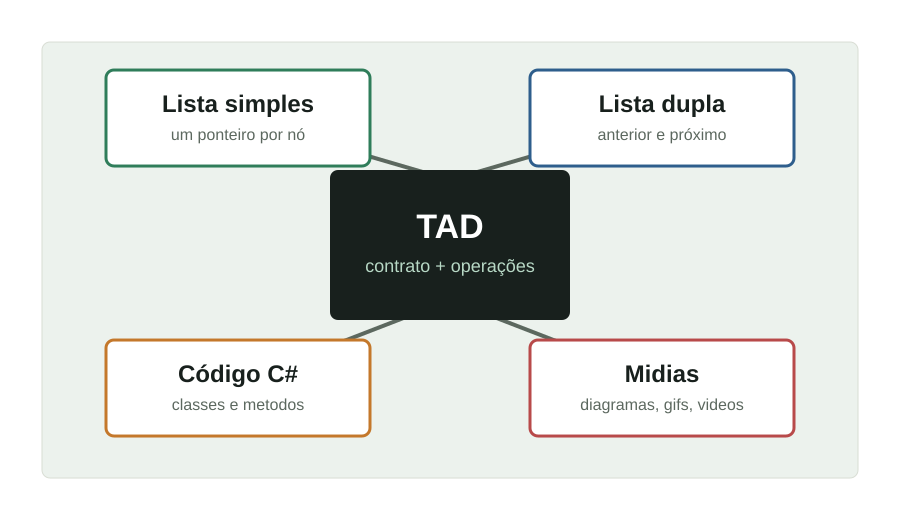

Explicação clara
Apresentar o que é cada estrutura de dados, por que ela existe e em quais situações ela costuma ser utilizada.
Trabalho Prático 2 | Ambiente de ensino
Base inicial do sistema web do Grupo 6 para apresentar conceitos de TAD, listas simplesmente encadeadas e listas duplamente encadeadas com textos, diagramas e exemplos em C#.

Objetivo
Apresentar o que é cada estrutura de dados, por que ela existe e em quais situações ela costuma ser utilizada.
Usar diagramas, imagens, gifs ou vídeos para mostrar a movimentação dos nós e a relação entre os ponteiros.
Incluir exemplos implementados em C#, seguindo a linguagem pedida no enunciado do trabalho.
Conteúdo inicial
Próximos passos